측량및지형공간정보산업기사 (2003-05-25 기출문제)
1과목: 응용측량
1. 축척 1/50,000의 도면상에서 어떤 토지 개량 지구의 면적을 구하였더니 56.60㎝2 였다. 실제면적은?
- 1,150ha
- 1,215ha
- 1,315ha
- 1,415ha
(정답률: 알수없음)
2. 다음은 토지의 교차점에 대한 절토높이를 나타낸 것이다. 절토량은 얼마인가? (단, 단위는 m, 각 구역의 크기는 같으며 4m × 2m이다.)
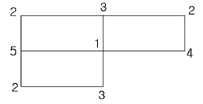
- 28m3
- 36m3
- 48m3
- 64m3
(정답률: 알수없음)

3. 캔트(cant)의 계산에서 속도 및 반경을 모두 2배로 할 때 캔트의 크기 변화는?
- 1/4 배로 감소
- 1/2 배로 감소
- 2 배로 증가
- 4 배로 증가
(정답률: 알수없음)
4. 교각 I=60°, 곡선반경 R=80m인 단곡선의 교점(I.P.)의 추가거리가 1152.52m일 때 곡선의 시점 B.C의 추가거리는?
- 750.35m
- 1106.34m
- 1251.55m
- 1415.34m
(정답률: 알수없음)
5. 노선측량에서 제1중앙종거와 제2중앙종거의 비율은?
- 1/2
- 1/4
- 1/8
- 1/16
(정답률: 알수없음)
6. 하천의 수위에서 어떤 기간내에 있어서의 관측수위 중 그 상, 하에 있어서의 관측회수가 같게 되는 수위는?
- 평수위(平水位)
- 평균수위(平均水位)
- 최다수위(最多水位)
- 평균저수위(平均低水位)
(정답률: 알수없음)
7. 길이 100m, 직경 5m인 1 개의 수갱에 의해 갱내외를 연결하는 데 어느 방법이 가장 간단하고 적당한가?
- 삼각법
- 사변형법
- 정렬법
- 트랜싯과 추선에 의한 법
(정답률: 알수없음)
8. A점의 좌표가 (328,110)이고, B점의 좌표가 (734,589)일 때 두점의 수평거리는? (단, 단위는 m임)
- 440.99m
- 442.50m
- 627.91m
- 629.71m
(정답률: 알수없음)
9. 다음과 같은 500mm 하수관 공사에서 A점의 관저 계획고는 50.15m이고 B점의 관저 계획고는 50.45m, 하수관의 구배가 1/250일 때 AB 간의 거리는?
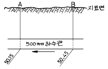
- 60m
- 75m
- 120m
- 150m
(정답률: 알수없음)
10. 그림과 같은 단곡선에서 곡률반경(R)=50m, AI의 방위=N79° 49' 32"E, BI의 방위=N50° 10' 28"W 일 때 AB의 거리는 얼마인가?
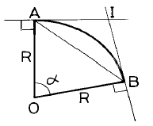
- 34.20m
- 28.36m
- 42.26m
- 10.81m
(정답률: 알수없음)
11. 도형의 면적을 구하는데 있어서 아래 그림과 같은 곡선의 호 AB를 2차곡선으로 가정할 때 그 면적 ABEF를 구하는 공식은?
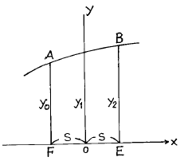
- A =
 S(y0+2y1+y2)
S(y0+2y1+y2) - A =
 S(y0+3y1+y2)
S(y0+3y1+y2) - A =
 S(y0+4y1+y2)
S(y0+4y1+y2) - A =
 S(y0+3y1+y2)
S(y0+3y1+y2)
(정답률: 알수없음)
12. 시설물의 계획 설계시 경관상 검토되는 위치결정에 필요한 측량은 ?
- 공사 측량
- 공공 측량
- 경관 측량
- 자원 측량
(정답률: 알수없음)
13. 하천 측량에서 유속을 측정하고자 할 때 2점법에 의한 하천의 평균유속을 구하는 식은?
- Vm =
 · (V0.2 + V0.8)
· (V0.2 + V0.8) - Vm =
 · (V0.2 + V0.8)
· (V0.2 + V0.8) - Vm =
 · (V0.2 + V0.6)
· (V0.2 + V0.6) - Vm =
 · (V0.2 + V0.6)
· (V0.2 + V0.6)
(정답률: 알수없음)
14. 경관분석을 위한 기초인자가 아닌 것은?
- 인간의 시지각특성
- 대상의 시각 속성
- 시점과 대상과의 관계
- 현황사진
(정답률: 알수없음)
15. 하천의 삼각측량에서 가장 많이 쓰이는 삼각망의 형성방법은 어느 것이 적당한가?
- 교차삼각형
- 단열삼각형
- 복열삼각형
- 유심삼각형
(정답률: 알수없음)
16. 완화곡선에 사용하는 클로소이드에 대한 설명으로 옳지 않은 것은?
- 클로소이드는 곡률이 곡선장에 비례하여 증가하는 곡선이다.
- 단위 클로소이드의 각 요소는 모두 무차원이다.
- 클로소이드의 종점의 좌표는 x, y는 그 점의 접선각(I)의 함수로 표시된다.
- 곡선장(L)과 파라메타(A)가 일정할 때 이정량(ΔR)을 변화시키므로써 임의 반경의 원주선에 접속시킬 수 있다.
(정답률: 알수없음)
17. 삼각형의 세변의 길이를 측정한 결과 다음과 같을 때 이 삼각형의 면적은 얼마인가? (단, 세변의 길이 a=20m, b=30m, c=20m 이다.)
- 100.098m2
- 198.431m2
- 143.281m2
- 132.009m2
(정답률: 알수없음)
18. 원곡선을 설치하고자 한다. 곡선시점(B.C)의 좌표가 XB.C=100.000m, YB.C=100.000m이고, 곡선반경이 160m, 교각이 24° 56′ 3.46″ 일 때, 교점(I.P)의 좌표는 얼마인가? (단, 원곡선 시점 B.C와 교점 I.P와의 방위각 = 57° 34′ 44.17″ 이다.)
- XI.P=108.966m, YI.P=129.861m
- XI.P=118.966m, YI.P=129.861m
- XI.P=118.966m, YI.P=109.861m
- XI.P=108.966m, YI.P=109.861m
(정답률: 알수없음)
19. 도로에서 곡선위를 주행할 때 원심력에 의한 차량의 전복이나 미끄러짐을 방지하기 위해 곡선중심으로부터 바깥쪽의 도로를 높이는 것은 무엇인가?
- 확폭
- 편경사
- 종거
- 편각
(정답률: 알수없음)
20. 갱 내부에 곡선을 설치하려할 때 가장 적합한 곡선 설치 방법은?
- 현편거법
- 편각현장법
- 전방교회법
- 장현지거법
(정답률: 알수없음)
2과목: 사진측량 및 원격탐사
21. 제 2과목: 사진측량 다음 사진지도에 대한 설명중 틀린 것은?
- 사진을 집성하여 지도처럼 만든 것을 사진지도라고 한다.
- 사진지도는 일반 지형도에서는 표현할 수 없는 여러가지 것을 알 수 있으므로 조사용으로 유용하다.
- 사진지도는 사진변위의 수정방법에 따라 세가지로 나누며 모두 등고선이 삽입되어 있다.
- 사진지도는 비교적 넓은 지역을 한 눈에 알 수 있다는 장점이 있다.
(정답률: 알수없음)
22. 비행고도 5,484m에서 촬영한 2매의 연속 연직사진의 주점기선장이 68.55mm일 때 등고선 간격 20m에 해당되는 시차차는?
- 0.25 mm
- 0.16 mm
- 0.63 mm
- 1.60 mm
(정답률: 알수없음)
23. 항공사진의 촬영에 대한 다음 설명 중 옳지 못한 것은?
- 같은 사진기를 이용하여 촬영할 경우, 촬영고도와 촬영면적은 정비례한다.
- 같은 사진기를 이용하여 촬영할 경우, 촬영고도와 사진축척은 반비례한다.
- 같은 사진기를 이용하여 촬영할 경우, 촬영고도와 촬영되는 폭은 정비례한다.
- 같은 사진기를 이용하여 촬영할 경우, 고도를 2배로하면 사진매수는 1/4배로 줄어든다.
(정답률: 알수없음)
24. 평균고도 400m의 토지를 해면상 3000m 에서 촬영하여 C 계수(factor)가 1300인 도화기로써 도화하는 경우 그릴 수 있는 최소 등고선 간격은?
- 4 m
- 20 m
- 2 m
- 10 m
(정답률: 알수없음)
25. 동서 10㎞, 남북 10㎞의 정사각형 구역에서 축척 1/20000인 항공사진 한장의 입체모델에 찍힌 유효면적이 5.92㎞2일 때 이 지역에 필요한 사진 매수는? (단, 안전율은 20% 이다.)
- 4 매
- 17 매
- 21 매
- 41 매
(정답률: 알수없음)
26. 경사변위(tilt displacement)는 다음 중 어느 점을 통과하는 축을 중심으로 발생하는가?
- 사진주점
- 연직점
- 등각점
- 표정점
(정답률: 알수없음)
27. 1 코오스의 촬영 중 한개의 촬영점으로부터 다음 촬영점 까지의 종방향 거리를 나타낸 용어는?
- 종중복도
- 촬영기선 길이
- 촬영 코오스 길이
- 최소 소요 노출시간
(정답률: 알수없음)
28. 초점거리 10㎝인 카메라로 사진축척 1/20000 항공사진을 촬영하고자 한다. 이때 촬영고도는 얼마인가?
- 750m
- 1330m
- 2000m
- 3000m
(정답률: 알수없음)
29. 항공사진기의 렌즈의 중심(O)을 지나 화면에 내린 수선의 발, 즉 렌즈의 광축과 사진면이 교차하는 점을 무슨 점이라 하는가?
- 주점
- 연직점
- 등각점
- 중심점
(정답률: 알수없음)
30. 세부도화시 지형 지물을 도화하는 가장 적합한 순서는?
- 도로 - 수로 - 건물 - 식물
- 건물 - 수로 - 식물 - 도로
- 식물 - 건물 - 도로 - 수로
- 도로 - 식물 - 건물 - 수로
(정답률: 알수없음)
31. 항공사진 측량 중 스트립(strip)을 인접 스트립에 연결시켜 블록(block)의 형성을 목적으로 하는 점은?
- 표정점
- 자침점
- 횡접합점
- 종접합점
(정답률: 알수없음)
32. 다음중 표정순서가 옳은 것은?
- 내부표정 - 상호표정 - 대지표정
- 내부표정 - 대지표정 - 상호표정
- 상호표정 - 내부표정 - 대지표정
- 대지표정 - 상호표정 - 내부표정
(정답률: 알수없음)
33. 다음은 항공사진의 성질을 설명한 것이다. 이 중 틀리게 설명된 것은?
- 항공사진은 지면에 비고가 있으면 그 상은 변형되어 찍힌다.
- 항공사진은 지면에 비고가 있으면 연직사진의 경우에도 렌즈의 중심과 지상점의 높이의 차에 의하여 축척을 변환한다.
- 항공사진은 연직사진이 아니므로 지도를 만들 수 없다.
- 항공사진이 경사져 있으면 지면이 평탄하더라도 사진의 경사 방향에 따라 축척이 일정하지 않다.
(정답률: 알수없음)
34. 다음 중 지상사진측량의 촬영법이 아닌 것은?
- 직각수평촬영
- 양각수평촬영
- 편각수평촬영
- 수렴수평촬영
(정답률: 알수없음)
35. 항공사진은 다음 어떤 원리에 의한 지형지물의 상인가?
- 정사투영
- 팽행투영
- 중심투영
- 등적투영
(정답률: 알수없음)
36. 촬영고도 2000m, 축척 1/10000의 수직사진이 있다. 지상연직점으로부터 400m인 곳에 비고 100m인 산악의 기복변 위량은?
- 80mm
- 20mm
- 8mm
- 2mm
(정답률: 알수없음)
37. 항공사진의 촬영사진기 중 보통각 렌즈의 시야각은?
- 30°
- 60°
- 80°
- 120°
(정답률: 알수없음)
38. 사진을 기하학적 형태로서 재현시키기 위하여 표정을 한다. 다음 중 표정과정을 가장 잘 설명한 것은?
- 절대표정은 입체모델 축척의 결정, 수준면의 결정, 위치의 결정을 하는 작업이다.
- 내부표정은 사진의 종 시차를 소거하는 작업이다.
- 접합표정은 다른 한쪽만 움직여 그 다른 쪽에 접합시키는 방법이다.
- 상호표정은 κ , ψ , ω , by, bz의 표정인자로 횡시차를 소거하는 방법이다.
(정답률: 알수없음)
39. 초점거리 15cm, 사진면크기 23cm×23cm인 사진기로 찍은 종중복도 60% 인 밀착사진인화 필름을 입체시 했을 때 기선고도비는?
- 0.4
- 0.6
- 0.8
- 1.0
(정답률: 알수없음)
40. 다음의 항공사진 기복변위 내용 중 옳지 않은 것은?
- 사진상의 연직점을 중심으로 한 변위이다.
- 중심투영상이다.
- 정사투영상이다.
- 비고의 높이에 비례한다.
(정답률: 알수없음)
3과목: GIS 및 GPS
41. 면적이 400m2인 지역을 0.1m2까지 정확하게 측정하고자 할 때 각 측선 변장의 최대 허용한도는? (단, 측각오차는 없고 최대거리는 20m 이다.)
- 0.50cm까지 정확하게 측정해야 한다.
- 0.25cm까지 정확하게 측정해야 한다.
- 0.⑤cm까지 정확하게 측정해야 한다.
- 0.01cm까지 정확하게 측정해야 한다.
(정답률: 알수없음)
42. GIS 자료의 저장방식은 크게 파일 저장방식과 DBMS(Data Base Management System)방식으로 나눌수 있는데 파일 저장방식에 비해 DBMS 방식이 갖는 장점이 아닌 것은?
- 자료의 신뢰도가 일정 수준으로 유지될 수 있다.
- 새로운 응용프로그램을 개발하는데 용이하다.
- 시스템이 간단하여 경제적이다.
- 사용자 요구에 맞는 다양한 양식의 자료를 제공할 수있다.
(정답률: 알수없음)
43. 다음 중 어떤 한가지 현상(강우량, 토지이용현황 등)에 대해 표시된 지도는 어느 것인가?
- 주제도
- 챠트
- 지형분석도
- 시설물도
(정답률: 알수없음)
44. 다음 그림과 같은 단면의 단면적은?
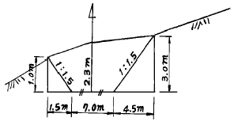
- 6.95 m2
- 13.25 m2
- 21.95 m2
- 26.75 m2
(정답률: 알수없음)
45. 각과 거리를 측정하여 그 점의 위치를 결정하는 경우 거리측량의 정도를 1/10,000 라고 하면 각 오차는 어느정도까지 허용되는가?
- 10″
- 20″
- 30″
- 40″
(정답률: 알수없음)
46. 수준측량에서 레벨기기에 의해 발생하는 오차가 아닌 것은?
- 시준선과 기포관이 평행하지 않아서 발생하는 오차
- 태양의 직사광선에 의해 발생하는 오차
- 기포의 감도에 의해 발생하는 오차
- 지구곡률에 의해 발생하는 오차
(정답률: 알수없음)
47. 평판을 세우는데 있어 가장 큰 오차는?
- 평판이 수평이 아닌 경우
- 시준공의 크기가 큰 경우
- 표정이 불완전한 경우
- 도상점과 지상점이 일치하지 않는 경우
(정답률: 알수없음)
48. 다음 용어의 설명중 틀린 것은 어느 것인가?
- 후시(後視)란 표고를 알고 있는 측점에 대한 시준을 말한다.
- 지반고는 시준고에서 전시를 뺀(-)것이다.
- 지오이드면(geoid surface)란 지구의 표면이 평균해면에 잠겨 있다고 가상한 면으로 회전타원체를 의미한다.
- 기준면이란 높이의 기준이 되는 점으로 표고 0(zero)이고 우리나라는 인천만의 평균해면을 취한다.
(정답률: 알수없음)
49. 그림에서 B.M의 지반고가 89.815m라면 C점의 지반고는?
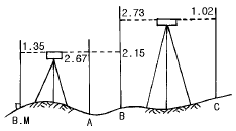
- 85.275m
- 90.725m
- 95.943m
- 88.392m
(정답률: 알수없음)
50. 표준자와 비교하였더니 30m에 대하여 5cm가 늘어난 헝겊 테이프로 삼각형의 땅을 측정하여 삼사법으로 면적을 측정하였더니 930m2였다. 정확한 면적은 다음중 어느 것인가?
- 1007.5m2
- 933.1m2
- 926.9m2
- 896.9m2
(정답률: 알수없음)
51. 지형공간정보체계를 통하여 수행 할 수 있는 지도 모형화의 장점이 아닌 것은?
- 문제를 분명히 정의하고, 문제를 해결하는 데에 필요한 자료를 명확하게 결정할 수 있다.
- 여러 가지 연산 또는 시나리오의 결과를 쉽게 비교할 수 있다.
- 많은 경우에 조건을 변경시키거나 시간의 경과에 따른 모의분석을 할 수 있다.
- 자료가 명목 혹은 서열의 척도로 구성되어 있을지라도 시스템은 레이어의 정보를 정수로 표현한다.
(정답률: 알수없음)
52. 갑, 을, 병, 3사람이 기선측량을 한 결과 다음과 같은 결과를 얻었다. 최확치는 다음 중 어느 것인가?
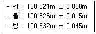
- 100.521m
- 100.524m
- 100.526m
- 100.531m
(정답률: 알수없음)
53. 1/600축척으로 평판 측량을 할 때 추가 측점을 중심으로 몇 cm 반경내에 떨어지도록 평판을 표정하면 오차도 도면상에서 나타나지 않고 가장 작업이 능률적이겠는가? (단, 도면상의 허용오차는 0.2mm)
- 6cm
- 16cm
- 26cm
- 36cm
(정답률: 알수없음)
54. 다음 중 지자기의 3요소가 옳게 짝지어진 것은?
- 편각, 수평각, 방향분력
- 편각, 연직각, 수직분력
- 편각, 복각, 수평분력
- 편각, 경사각, 연직분력
(정답률: 알수없음)
55. 그림과 같은 결합 트래버스에서 CD의 방위각은?
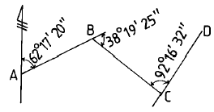
- 8° 20' 13"
- 116° 14' 27"
- 12° 53' 17"
- 188° 20' 13"
(정답률: 알수없음)
56. 전길이를 n구간으로 나누어 1구간 측정시 3㎜의 정오차와 ± 3㎜의 우연오차가 발생했을 때 정오차와 우연오차를 고려한 전길이의 오차는?
- 3 √n ㎜
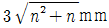
- 3 √n3 ㎜
- 3n √2 ㎜
(정답률: 알수없음)
57. 표고 h = 326.42m 인 지역에 설치한 기선의 길이가 500m일 때 평균 해면상의 길이로 보정한 값은? (단, R = 6367㎞ 임)
- 499.854 m
- 499.974 m
- 500.256 m
- 500.456 m
(정답률: 알수없음)
58. 그림과 같이 어떤 사면 AB에서 A점의 표고를 200m, 점 B의 표고를 75m, AB의 수평거리는 220m이다. 이때 10m마다 등고선을 넣는다고 하면 150m의 등고선은 AB선상 B에서부터 얼마나 떨어진 곳에 있는가?
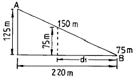
- 155 m
- 150 m
- 135 m
- 132 m
(정답률: 알수없음)
59. 교호수준 측량을 하여 그림과 같은 결과를 얻었다. B점의 표고를 구하시오.
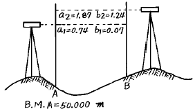
- 50.65 m
- 50.75 m
- 50.85 m
- 50.95 m
(정답률: 알수없음)
60. 지형공간정보체계의 자료 중 특성정보에 해당하지 않는 것은?
- 도형정보
- 영상정보
- 속성정보
- 위치정보
(정답률: 알수없음)
4과목: 측량학
61. 공공측량 용역 현장에 측량 기술자의 배치 기준중 맞는 것은?
- 중급기술자 1인 이상
- 고급기술자 1인 이상
- 중급기술자 2인 이상
- 고급기술자 2인 이상
(정답률: 알수없음)
62. 축척 5만분의1 미만의 지도를 국외로 반출하는 경우의 행정적인 절차로 옳은 것은?
- 허가 없이 반출할 수 있다.
- 건설교통부장관의 허가를 받아야 한다.
- 미리 국립지리원장의 허가를 받아야 한다.
- 미리 국립지리원장에게 신고하여야 한다.
(정답률: 알수없음)
63. 다음 중 기본측량 성과의 고시 사항이 아닌 것은?
- 임시로 설치한 측량표의 수
- 측량의 종류
- 측량실시의 시기 및 지역
- 측량성과 보관장소
(정답률: 알수없음)
64. 측량심의회의 심의 사항과 관계가 먼 것은?
- 측량도서의 발간
- 공공측량의 심사
- 측량기술의 연구·발전
- 기본측량에 관한 계획의 수립 및 실시
(정답률: 알수없음)
65. 다음 중 측량표의 종류에 속하지 않는 것은?
- 영구표지
- 정기표지
- 임시설치표지
- 일시표지
(정답률: 알수없음)
66. 학사학위를 가진자로서 9년이상 측량업무를 수행한 학력경력자의 기술등급은?
- 특급기술자
- 고급기술자
- 중급기술자
- 고급기능자
(정답률: 알수없음)
67. 1:5,000 지형도의 계곡선 간격은?
- 5m
- 10m
- 20m
- 25m
(정답률: 알수없음)
68. 다음 중 공공측량에 속하지 아니하는 것은?
- 고도의 정확성을 필요로 하는 측량
- 기본측량의 성과를 기초로 하여 실시하는 측량
- 공공측량의 성과를 기초로 하여 실시하는 측량
- 모든측량의 기초가 되는 것으로서 국립지리원장이 실시하는 측량
(정답률: 알수없음)
69. 지형도에 표기할 주기(註記)대상이 아닌 것은?
- 행정지명
- 하천명
- 지적번호
- 도로번호
(정답률: 알수없음)
70. 건설교통부장관이 일반측량의 실시자에게 측량성과 및 측량기록사본의 제출을 요구할 수 있는 목적이 아닌 것은?
- 측량의 정확성 확보
- 측량지역 경제분쟁조정
- 측량의 중복배제
- 측량에 관한 자료의 수집, 분석
(정답률: 알수없음)
71. 건설교통부장관 또는 국립지리원장의 권한을 지정하는 협회 또는 공공기관에 위탁한 사항에 해당하는 것은?
- 지도 등의 심사
- 측량기기에 대한 성능 검사
- 토지· 건물· 죽목 기타 공작물의 수용 또는 사용
- 측량업의 등록
(정답률: 알수없음)
72. 측량업 등록취소 사유로 틀린 것은?
- 다른사람에게 자기의 등록증을 대여한 때
- 고의로 측량성과를 사실과 다르게 한 때
- 다른사람에게 자기의 등록수첩을 대여한 때
- 허위 기타 부정한 방법으로 측량업의 등록을 한 때
(정답률: 알수없음)
73. 측량법상 수용이 가능한 대상물이 아닌 것은?
- 선박
- 건물
- 죽목
- 공작물
(정답률: 알수없음)
74. 1 : 25,000 지형도의 도곽구성으로 옳은 것은?
- 경위도 15′ 차의 경위선에 의해 구획되는 지역
- 경위도 7′ 30″ 차의 경위선에 의해 구획되는 지역
- 경위도 10′ 차의 경위선에 의해 구획되는 지역
- 경위도 1′ 30″ 차의 경위선에 의해 구획되는 지역
(정답률: 알수없음)
75. 지형도의 표현대상이 될수 있는 것에 대한 설명으로 틀린것은?
- 대상물은 영속성이 있는 현존하는 지물
- 건설중인 시설물로서 단기간내에 완성가능한 것
- 영속성이 없는 지물등이라도 필요하다고 인정되는 것은 표현할 수 있다.
- 보안에 저촉되더라도 이들을 표시하지 않으면 표현상 불합리한 것
(정답률: 알수없음)
76. 측량의 기준에 대한 설명으로 틀린 것은?
- 지리학적 경위도는 세계측지계에 따라 측정한다.
- 측량의 원점값의 결정 등에 관한 사항은 건설교통부령으로 정한다.
- 측량의 원점은 대한민국경위도원점 및 수준원점으로 한다.
- 위치는 지리학적 경위도와 평균해면으로부터의 높이로 표시한다.
(정답률: 알수없음)
77. 측량업의 등록을 하지 않고 측량업을 영위한 자에 대한 벌칙은?
- 1년 이하의 징역 또는 300만원 이하의 벌금
- 2년 이하의 징역 또는 500만원 이하의 벌금
- 3년 이하의 징역 또는 1000만원 이하의 벌금
- 200만원 이하의 과태료에 처한다.
(정답률: 알수없음)
78. 측량업의 등록기준중 아래와 같은 기술능력을 보유하여야 하는 측량업은?
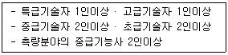
- 수치지도제작업
- 일반측량업
- 측지측량업
- 연안조사측량업
(정답률: 알수없음)
79. 기본측량 실시로 인한 손실보상은 누가 하는가?
- 행정자치부장관
- 국립지리원장
- 측량계획기관
- 건설교통부장관
(정답률: 알수없음)
80. 관할구역안에 지형지물의 변동이 있을 때에 대통령령이 정하는 바에 의하여 보고하는 자는?
- 측량협회장
- 국립지리원장
- 시장, 군수 또는 구청장
- 시, 도지사
(정답률: 알수없음)
- A 구역: 2m × 2m × 4m = 16m3
- B 구역: 2m × 2m × 2m = 8m3
- C 구역: 2m × 2m × 2m = 8m3
- D 구역: 2m × 2m × 2m = 8m3
- E 구역: 2m × 2m × 4m = 16m3
따라서 전체 절토량은 16m3 + 8m3 + 8m3 + 8m3 + 16m3 = 56m3 이다. 하지만 이 문제에서는 각 구역의 크기가 4m × 2m이므로, 실제 절토량은 이 값의 2배인 56m3 × 2 = 112m3 이다. 따라서 보기 중에서 정답은 "64m3" 이 아니라 "112m3" 이다.